The conversion rate that was lying to everyone
Dayshape sells AI powered resource management to large professional services firms. They came to us for conversion opportunities. The form completion rate read 11.6 percent, which looks like a form problem. It was not a form problem, and finding that out took one cut of the data that nobody had made.
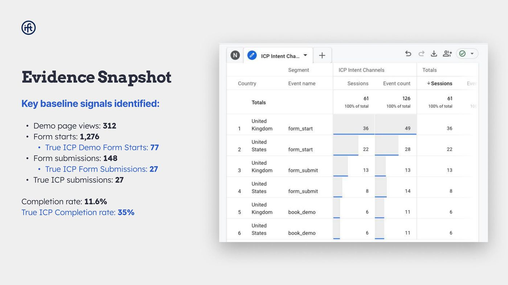
The segment that changed the brief
Blended across all traffic the demo form looked broken. 1,276 form starts, 148 submissions, an 11.6 percent completion rate. The obvious recommendation writes itself: redesign the form, reduce the fields, fix the friction.
Segmented to Dayshape's actual target customer, the ideal customer profile, the same form in the same period showed 77 starts and 27 submissions. A 35 percent completion rate. That is not a broken form. That is a form performing perfectly well for the people it was built for, buried inside a much larger volume of people it was never built for.
- 11.6%blended form completion rate
- 35%completion rate among the true target customer
- 1,276total form starts
- 77form starts from the target customer
If I had taken the blended number at face value, the engagement would have been three months of redesigning a form that did not need redesigning, and the actual problem, traffic quality and above the fold messaging, would have gone untouched.
This is the single most useful habit I have. Before recommending a change to a thing, check whether the number that made the thing look broken is describing the audience you care about. Most of the time a blended rate is two populations averaged into a conclusion that applies to neither.
Where the real problem was
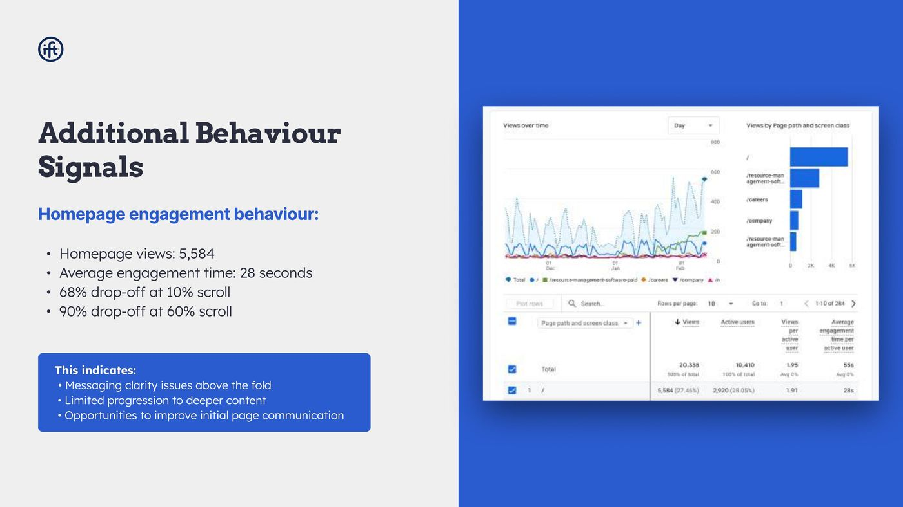
Two thirds of homepage visitors left before scrolling a tenth of the page. Ninety percent were gone by 60 percent. Combined with a 28 second average engagement time, that is not a conversion path problem, it is a first screen comprehension problem.
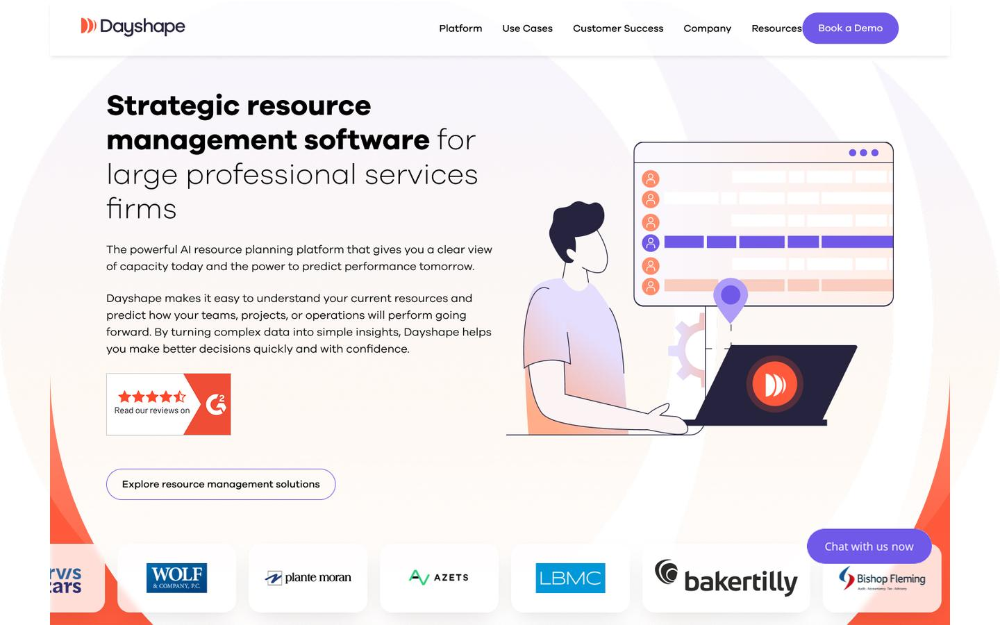
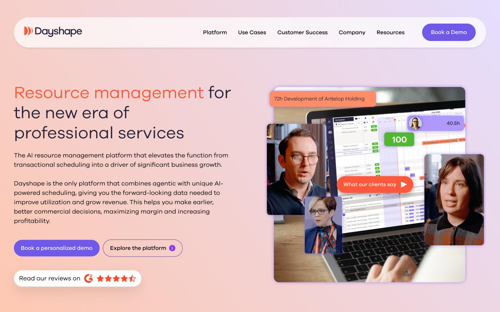
From evidence to a roadmap
The deliverable was not a list of fixes. It was a sequenced roadmap that starts with the things that have to be true before any test is worth running, which is usually the part clients want to skip.
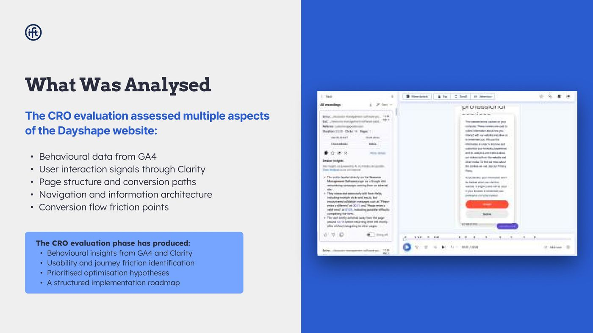
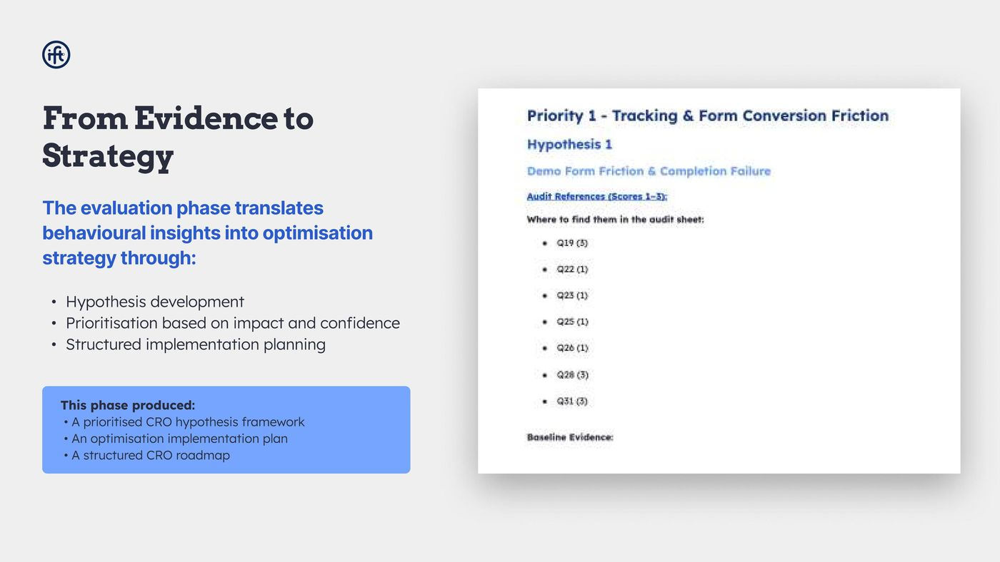
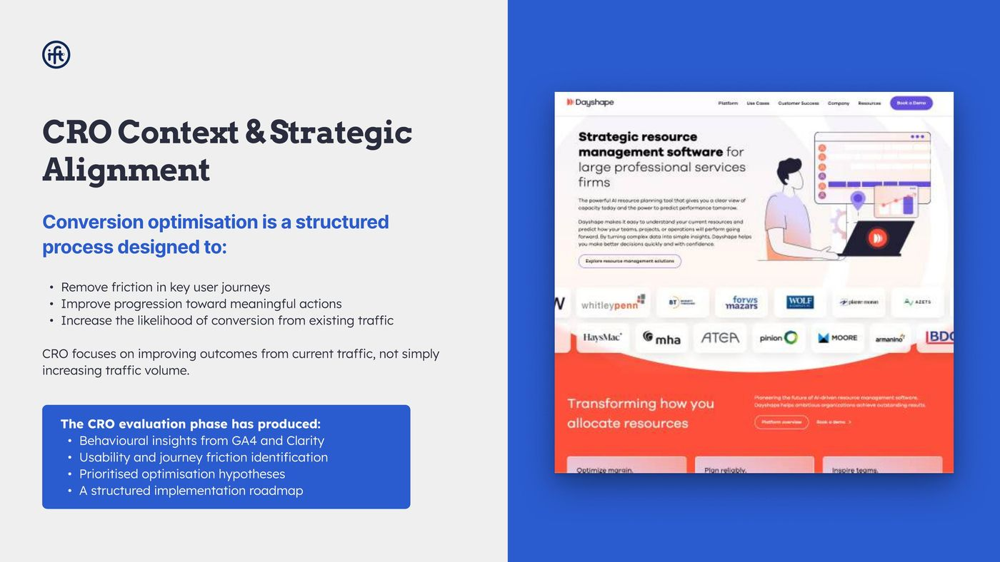
The pages
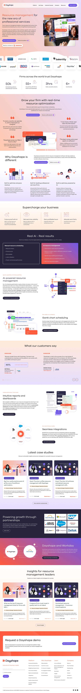
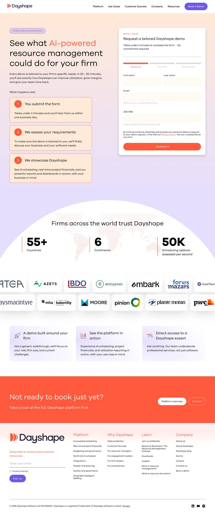

What the redesign actually changed
The analysis pointed at above the fold comprehension, so the design work concentrated there and then followed the visitor through. Product and customer imagery replacing illustration in the hero. Social proof lifted to sit beside the action rather than decorating the footer. Two routes forward at different commitment levels instead of one. Then the same treatment applied through the platform pages, the demo page and the content pages, so a visitor who does progress does not hit a different site one click in.
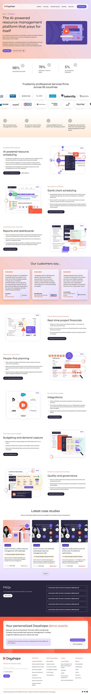
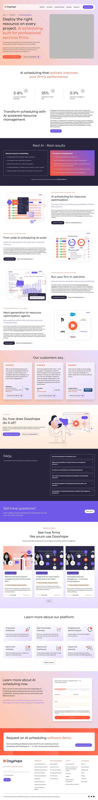
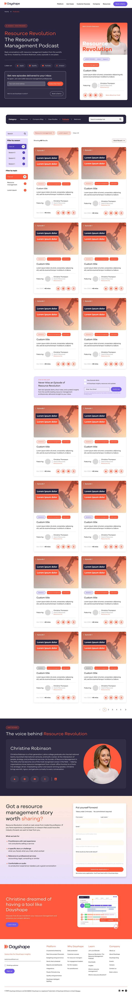
What I would do differently
I would have run the segmentation in week one rather than week three. I did the blended analysis first because that is the report everyone expects, then found the real answer when I went looking for something else. The order should be reversed: segment first, and only look at the blended number to understand what the client currently believes.